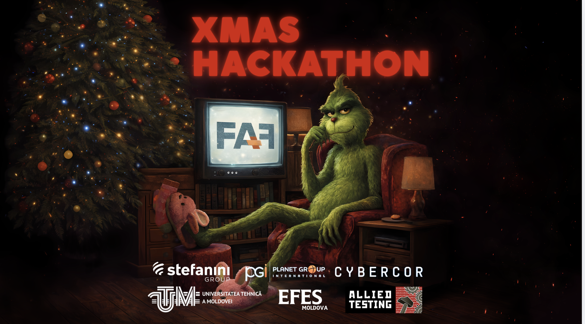
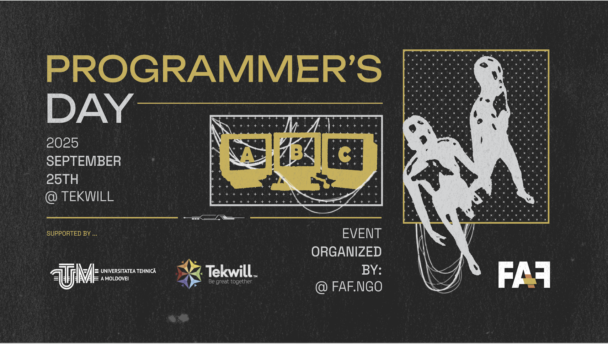
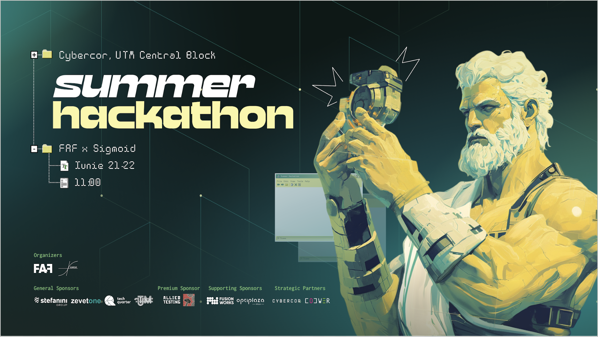
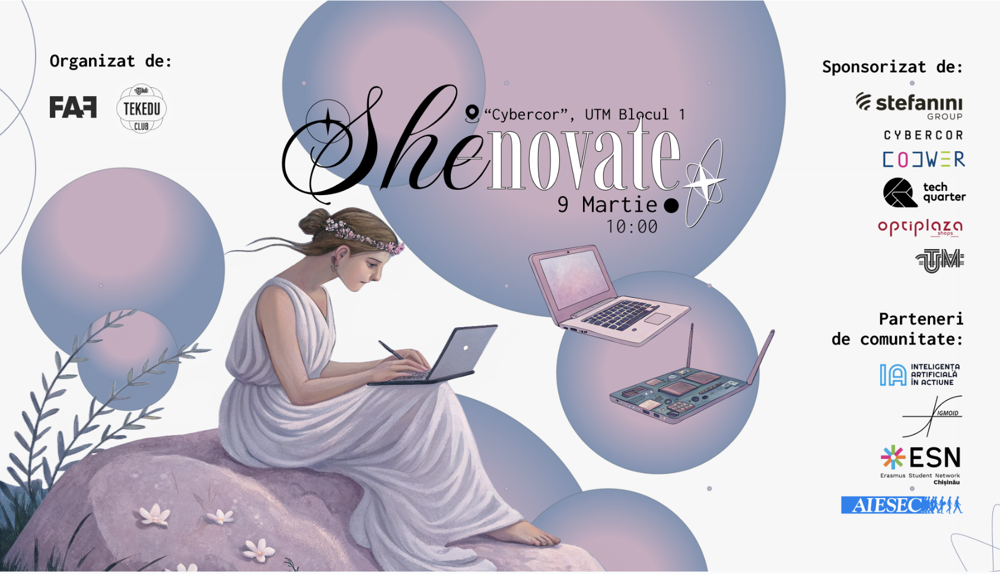
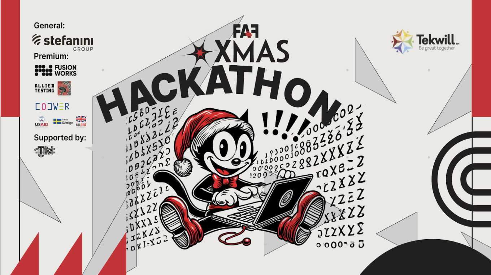
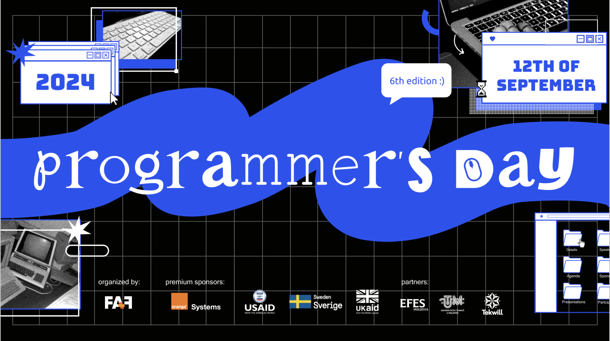
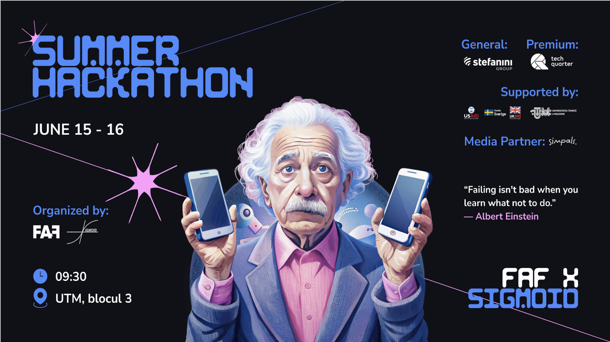
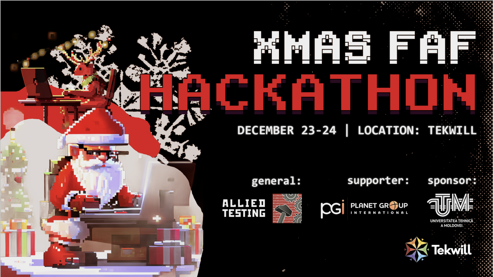
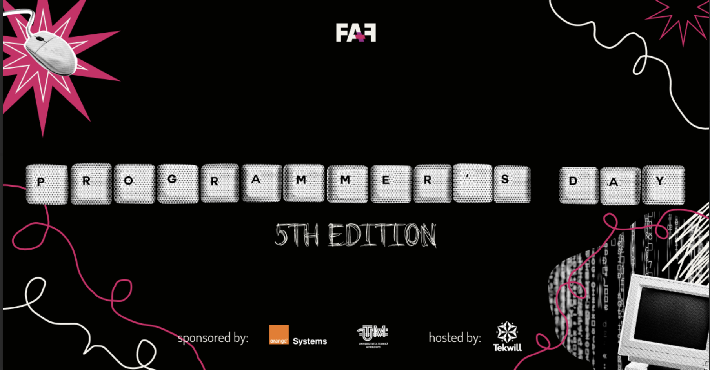
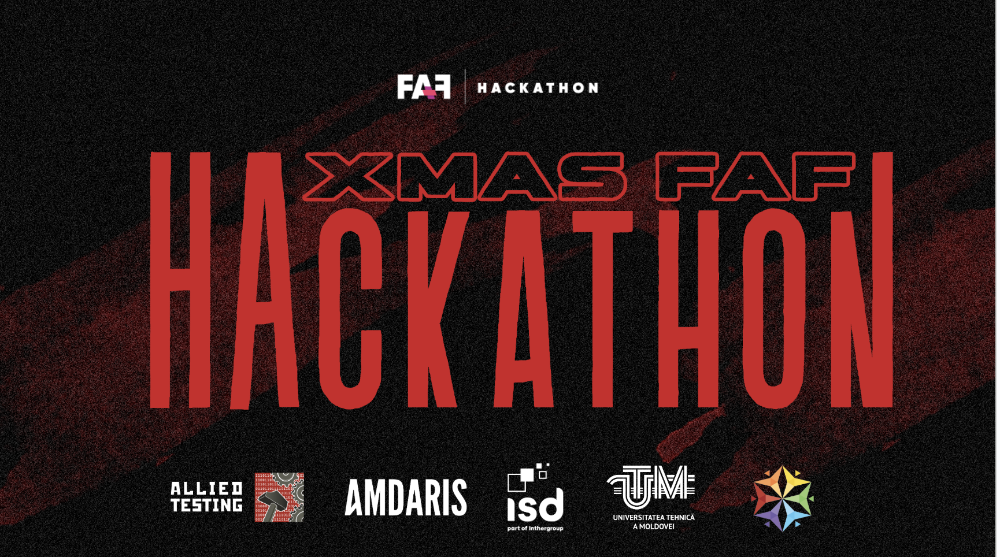

XMAS Hackathon 2025
Held: December 20-21, 2025 | Tekwill
The most iconic year-end event for the FAF community, focused on "Building Something Epic." This edition featured three intensive technical tracks: AI for Study Optimization, Machine Learning, and Cybersecurity. Each category concluded with a major prize for the winning teams, alongside the high-level mentorship and festive atmosphere that defines the FAF family.

Programmers’ Day 2025
Held: September 13, 2025 | Tekwill
A large-scale celebration of the 256th day of the year. The event featured a technical conference with international experts, followed by interactive IT quizzes with prizes and a vibrant networking session to connect the community.

Summer Hackathon 2025
Held: June 21-22, 2025 | CyberCor
A 24-hour endurance challenge where 150+ students and mentors built new tech products from scratch. Participants competed in three distinct technical categories, with prizes of €3000 awarded for the winning solutions in each track.

She-novate 2025
Held: March 9, 2025 | Tekwill
An empowering forum dedicated to women in technology. This edition featured keynote speeches and hands-on workshops led exclusively by industry leaders, focusing on breaking gender barriers and providing practical skill-building pathways.

XMAS Hackathon 2024
Held: December 21-22, 2024 | Tekwill
A holiday-themed 24h sprint centered on creative problem-solving. This edition emphasized community-led innovation, with mentors from top tech companies guiding teams to build functional prototypes in just one weekend.

Programmers’ Day 2024
Held: September 12, 2024 | Tekwill
The annual gathering featured technical talks from companies like Amdaris and Cegeka. The event focused on professional career paths and included a major networking session for students and young professionals.

Summer Hackathon 2024
Held: June 15-16, 2024 | FCIM Amphitheater
A "Marathon of Ingenuity" centered on solving real-world consumer problems through web platforms. Winning teams were recognized with specialized prizes from TechQuarter and Stefanini.

XMAS Hackathon 2023
Held: December 23-24, 2023 | Tekwill
75 enthusiasts tackled complex challenges in OCR technology and automatic timetable generation. The first-place prize was sponsored by Allied Testing, celebrating technical competence and festive collaboration.

Programmers’ Day 2023
Held: September 13, 2023 | Tekwill
A landmark celebration featuring panels on the future of AI and Web Development. The event hosted several guest speakers from the local IT hub and offered a platform for student-led project demonstrations.

Summer Hackathon 2023
Held: June 17-18, 2023 | UTM
Focused on building sustainable tech solutions, this 24h sprint brought together multi-disciplinary teams. It was noted for its high mentor-to-participant ratio, helping junior developers refine their product pitches.

XMAS Hackathon 2022
Held: December 17-18, 2022 | Tekwill
One of our first major post-pandemic gatherings. The event focused on "Smart City" concepts and featured a strong emphasis on game development and hardware integration using Arduino-based projects.